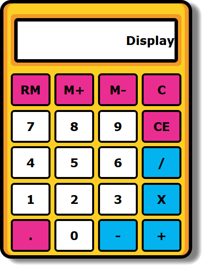

Ejercicio 1
En este primer ejercicio has de diseñar esta página como la imagen que te muestro. Para ello usa CSS y tu creatividad para acoplar la plantilla que te ofrezco al caso práctico

Puedes usar cualquier propiedad CSS de las vistas en las Q3 a la Q5
No puedes cambiar la estructura del HTML, pero si has de añadir estilos y las propiedades imprescindibles a cada etiqueta HTML
Ten en cuenta el tamaño la pantalla
Ejercicio 2
Maqueta la aplicación web del gestor de seguimiento de ejercicios que hiciste en la Q2
Ejercicio 3
Realiza el diseño de la siguiente calculadora.
Centra la calcualdora en el medio de la pantalla.
La maquetación de la página de la calcuadora ha de ser la misma que la de esta página